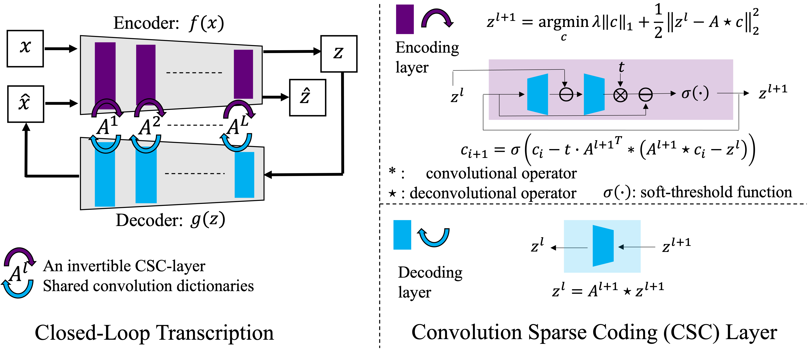
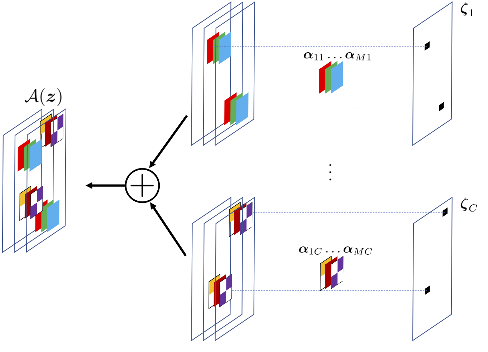

|
Hi, I am Xingjian Gao, a 5th Year Master student from the Department of Electrical Engineering and Computer Sciences (EECS) at University of California, Berkeley. I major in Computer Science and Applied Mathematics during my undergrad study at UC Berkeley. I am from Changzhou, China. |

|
|
I am currently a student researcher in Berkeley Artificial Intelligence Research Lab (BAIR) advised by Prof.Yi Ma. I also work closely with Xili Dai from Prof. Heung-Yeung Shum's lab in HKUST(GZ). My research interest lies in interpretability of deep learning, sparse coding, generative models, and representation learning. I am also interested in using deep learning to understand visual perception in primates and am working with Prof.Doris Tsao on interpreting neural data with generative models. |
|  |
Xili Dai*, Ke Chen*, Shengbang Tong*, Jingyuan Zhang*, Xingjian Gao, Mingyang Li, Druv Pai, Yuexiang Zhai, Xiaojun Yuan, Heung Yeung Shum, Lionel M.Ni, Yi Ma Under Review ICLR 2023 (Under Review) This paper proposes a new unsupervised method to learn a represenation and cluster for real life dataset such as CIFAR-10, CIFAR100 and Tiny-ImageNet-200. |
|  |
Xili Dai*, Mingyang Li*, Pengyuan Zhai, Shengbang Tong, Xingjian Gao, Shaolun Huang, Zhihui Zhu, Chong You, Yi Ma NeurIPS 2022 (Accepted) Our method uses differentiable optimization layers that are defined from convolutional sparse coding as drop-in replacements of standard convolutional layers in conventional deep neural networks. We show that such models have equally strong empirical performance on CIFAR-10, CIFAR-100 and ImageNet datasets when compared to conventional neural networks. |